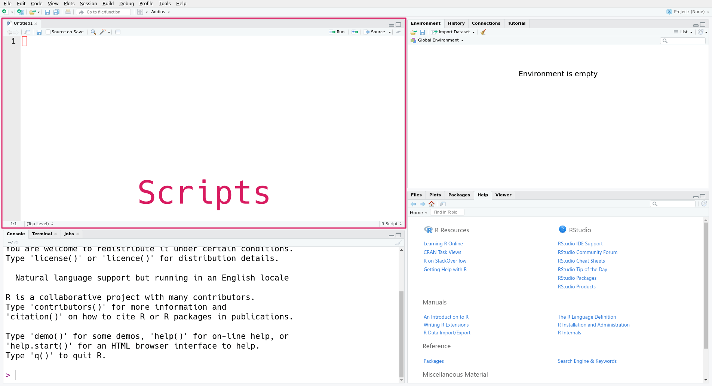

getwd()[1] "/home/nick/mill/datalab/teaching/adventures_in_data_science"After this lesson, you should be able to:
Let’s start with a remix of what you learned about file systems and paths in Chapter 1.
File systems have a tree-like structure, with a top-level directory called the root directory. On all macOS and Linux computers, the root is called /. On Windows, the root is usually called C:/, but sometimes other letters, like D:/, are also used depending on the computer’s hardware.
A path is a list of directories that leads to a specific file or directory on a file system (imagine giving directons to someone as they walk through the file system). Use forward slashes / to separate the directories in a path. The root directory includes a forward slash as part of its name, and doesn’t need an extra one.
When a path leads to a directory, including a trailing slash is optional, but makes the meaning of the path clearer. Paths that lead to files never have a trailing slash.
On Windows computers, paths are usually written with backslashes \ to separate directories instead of forward slashes. Fortunately, R uses forward slashes / for all paths, regardless of the operating system. So when you’re working in R, use forward slashes and don’t worry about the operating system. This is especially convenient when you want to share code with someone that uses a different operating system than you.
A path that starts from the root directory is called an absolute path. The path is “absolute” because it unambiguously describes where a file or directory is located. The downside is that absolute paths usually don’t work well if you share your code.
On the other hand, a relative path is one that doesn’t start from the root directory. The path is “relative” to an unspecified starting point, which usually depends on the context.
When use you paths in R code, they should almost always be relative paths. This ensures that the code is portable to other computers, which is an important aspect of reproducibility. Another benefit is that relative paths tend to be shorter, making your code easier to read (and write).
When you write paths, there are three shortcuts you can use. These are most useful in relative paths, but also work in absolute paths:
. means the current directory... means the directory above the current directory.~ means the home directory. Each user has their own home directory, whose location depends on the operating system and their username. Home directories are typically directories inside C:/Users/ on Windows, /Users/ on macOS, and /home/ on Linux.The .. and ~ shortcut are frequently used and worth remembering. The . shortcut is included here in case you see it in someone else’s code. Since it means the current directory, a path like ./cats.csv is identical to cats.csv, and the latter is preferable for being simpler. There are a few specific situations where . is necessary, but they fall outside the scope of this text.
The preceeding section explained that relative paths have a starting point that depends on the context where the path is used. Let’s make that idea more concrete for R. The working directory is the starting point R uses for relative paths. Think of the working directory as the directory R is currently “at” or watching.
The function getwd returns the absolute path for the current working directory, as a string. It doesn’t require any arguments:
getwd()[1] "/home/nick/mill/datalab/teaching/adventures_in_data_science"On your computer, the output from getwd will likely be different. This is a very useful function for getting your bearings when you write relative paths. If you write a relative path and it doesn’t work as expected, the first thing to do is check the working directory.
The related setwd function changes the working directory. It takes one argument: a path to the new working directory. Here’s an example:
setwd("..")
# Now check the working directory.
getwd()[1] "/home/nick/mill/datalab/teaching"Generally, you should avoid using calls to setwd in your R scripts and R Markdown files. Calling setwd makes your code more difficult to understand, and can always be avoided by using appropriate relative paths. If you call setwd with an absolute path, it also makes your code less portable to other computers. It’s fine to use setwd interactively (in the R console), but avoid making your saved code dependent on it.
Another function that’s useful for dealing with the working directory and file system is list.files. The list.files function returns the names of all of the files and directories inside of a directory. It accepts a path to a directory as an argument, or assumes the working directory if you don’t pass a path. For instance:
# List files and directories in /home/.
list.files("/home/")[1] "lost+found" "nick" # List files and directories in the working directory.
list.files() [1] "_freeze" "_quarto.yml"
[3] "05_files-packages-indexing.qmd" "chapters"
[5] "data" "docs"
[7] "html_cache" "images"
[9] "img" "index.html"
[11] "index.qmd" "LICENSE"
[13] "old_docs" "R"
[15] "README.md" "references.bib"
[17] "site_libs" As usual, since you have a different computer, you’re likely to see different output if you run this code. If you call list.files with an invalid path or an empty directory, the output is character(0):
list.files("/this/path/is/fake/")character(0)Later on, you’ll learn about what character(0) means more generally.
Now that you know how file systems and paths work, you’re ready to learn how to save your R code to a file. R code is usually saved into an R script (extension .R) or an R Markdown file (extension .Rmd). R scripts are slightly simpler, so let’s focus on those.
In RStudio, you can create a new R script with this menu option:
File -> New File -> R ScriptThis will open a new pane in RStudio, like this:

The new pane is the scripts pane, which displays all of the R scripts you’re editing. Each script appears in a separate tab. In the screenshot, only one script, the new script, is open.
Editing a script is similar to editing any other text document. You can write, delete, copy, cut, and paste text. You can also save the file to your computer’s file system. When you do, pay attention to where you save the file, as you might need it later.
The contents of an R script should be R code. Anything else you want to write in the script (notes, documentation, etc.) should be in a comment. In R, comments begin with # and extend to the end of the line:
# This is a comment.R will ignore comments when you run your code.
When you start a new project, it’s a good idea to create a specific directory for all of the project’s files. If you’re using R, you should also create one or more R scripts in that directory. As you work, write your code directly into a script. Arrange your code in the order of the steps to solve the problem, even if you write some parts before others. Comment out or delete any lines of code that you try but ultimately decide you don’t need. Make sure to save the file periodically so that you don’t lose your work. Following these guidelines will help you stay organized and make it easier to share your code with others later.
While editing, you can run the current line in the R console by pressing Ctrl+Enter on Windows and Linux, or Cmd+Enter on macOS. This way you can test and correct your code as you write it.
If you want, you can instead run (or source) the entire R script, by calling the source function with the path to the script as an argument. This is also what the “Source on Save” check box refers to in RStudio. The code runs in order, only stopping if an error occurs.
For instance, if you save the script as my_cool_script.R, then you can run source("my_cool_script.R") in the console to run the entire script (pay attention to the path—it may be different on your computer).
R Markdown files are an alternative format for storing R code. They provide a richer set of formatting options, and are usually a better choice than R scripts if you’re writing a report that contains code. You can learn more about R Markdown files here.
Analyzing data sets is one of the most common things to do in R. The first step is to get R to read your data. Data sets come in a variety of file formats, and you need to identify the format in order to tell R how to read the data.
Most of the time, you can guess the format of a file by looking at its extension, the characters (usually three) after the last dot . in the filename. For example, the extension .jpg or .jpeg indicates a JPEG image file. Some operating systems hide extensions by default, but you can find instructions to change this setting online by searching for “show file extensions” and your operating system’s name. The extension is just part of the file’s name, so it should be taken as a hint about the file’s format rather than a guarantee.
R has built-in functions for reading a variety of formats. The R community also provides packages, shareable and reusable pieces of code, to read even more formats. You’ll learn more about packages later, in Section 5.9. For now, let’s focus on data sets that can be read with R’s built-in functions.
Here are several formats that are frequently used to distribute data, along with the name of a built-in function or contributed package that can read the format:
| Name | Extension | Function or Package | Tabular? | Text? |
|---|---|---|---|---|
| Comma-separated Values | .csv |
read.csv |
Yes | Yes |
| Tab-separated Values | .tsv |
read.delim |
Yes | Yes |
| Fixed-width File | .fwf |
read.fwf |
Yes | Yes |
| Microsoft Excel | .xlsx |
readr package | Yes | No |
| Microsoft Excel 1993-2007 | .xls |
readr package | Yes | No |
| Apache Arrow | .feather |
arrow package | Yes | No |
| R Data | .rds |
readRDS |
Sometimes | No |
| R Data | .rda |
load |
Sometimes | No |
| Plaintext | .txt |
readLines |
Sometimes | Yes |
| Extensible Markup Language | .xml |
xml2 package | No | Yes |
| JavaScript Object Notation | .json |
jsonlite package | No | Yes |
A tabular data set is one that’s structured as a table, with rows and columns. This reader focuses on tabular data sets, since they’re common in practice and present the fewest programming challenges. Here’s an example of a tabular data set:
| Fruit | Quantity | Price |
|---|---|---|
| apple | 32 | 1.49 |
| banana | 541 | 0.79 |
| pear | 10 | 1.99 |
A text file is a file that contains human-readable lines of text. You can check this by opening the file with a text editor such as Microsoft Notepad or macOS TextEdit. Many file formats use text in order to make the format easier to work with.
For instance, a comma-separated values (CSV) file records a tabular data using one line per row, with commas separating columns. If you store the table above in a CSV file and open the file in a text editor, here’s what you’ll see:
Fruit,Quantity,Price
apple,32,1.49
banana,541,0.79
pear,10,1.99A binary file is one that’s not human-readable. You can’t just read off the data if you open a binary file in a text editor, but they have a number of other advantages. Compared to text files, binary files are often faster to read and take up less storage space (bytes).
As an example, R’s built-in binary format is called RDS (which may stand for “R data serialized”). RDS files are extremely useful for backing up work, since they can store any kind of R object, even ones that are not tabular. You can learn more about how to create an RDS file on the ?saveRDS help page, and how to read one on the ?readRDS help page.
This section is a remix of what you learned about data frames in Section 3.7. The main difference from that section is that now you’ll have R read the data set from a file (rather than creating it with the data.frame function), which is the most common way to get data.
To follow along, download and unzip this zip file in your project directory!
The data set we’ll use for this section comes from Information is Beautiful, a website dedicated to making informative and beautiful data visualizations. The data set is specifically from their Best in Show visualization, a plot of the popularity of different dog breeds versus their “data dog” scores, which were created by aggregating several breed characteristics (friendliness, health, longevity, cost of care, intelligence, and more).
The zip file contains copies of the dogs data set in several different formats. Let’s use the RDS file. To read an RDS file into R, you can use the readRDS function with the path to the file:
dogs = readRDS("data/best_in_show/dogs.rds")Now that you’ve loaded the data, let’s take a look at it. When you’re working with a new data set, it’s usually not a good idea to print it out directly (by typing dogs, in this case) until you know how big it is. Big data sets can take a long time to print, and the output can be difficult to read.
Instead, you can use the head function to print only the beginning, or head, of a data set. Let’s take a peek:
head(dogs) breed group datadog popularity_all popularity
1 Border Collie herding 3.64 45 39
2 Border Terrier terrier 3.61 80 61
3 Brittany sporting 3.54 30 30
4 Cairn Terrier terrier 3.53 59 48
5 Welsh Springer Spaniel sporting 3.34 130 81
6 English Cocker Spaniel sporting 3.33 63 51
lifetime_cost intelligence_rank longevity ailments price food_cost grooming
1 20143 1 12.52 2 623 324 weekly
2 22638 30 14.00 0 833 324 weekly
3 22589 19 12.92 0 618 466 weekly
4 21992 35 13.84 2 435 324 weekly
5 20224 31 12.49 1 750 324 weekly
6 18993 18 11.66 0 800 324 weekly
kids megarank_kids megarank size weight height
1 low 1 29 medium NA 20
2 high 2 1 small 13.5 NA
3 medium 3 11 medium 35.0 19
4 high 4 2 small 14.0 10
5 high 5 4 medium NA 18
6 high 6 5 medium 30.0 16This data set is tabular—it has rows and columns. R uses data frames to represent most (but not all) kinds of tabular data.
The readRDS function doesn’t always return a data frame, since RDS files can store any type of R object. On the other hand, the read.csv function, which reads CSV files (a tabular format), always returns a data frame.
For a data frame, the head function only prints the first six rows. If there are lots of columns or the columns are wide, as is the case here, R wraps the output across lines.
When you first read an object into R, you might not know whether it’s a data frame. One way to check is visually, by printing it (as you just did with head). A better way to check is with the class function, which returns information about what an object is. For a data frame, the result will always contain data.frame:
class(dogs)[1] "data.frame"Review Section 3.8 if you feel uncertain about R’s classes and types.
By counting the columns in the output from head(dogs), you can see that this data set has 18 columns. A more convenient way to check the number of columns in a data set is with the ncol function:
ncol(dogs)[1] 18The similarly-named nrow function returns the number of rows:
nrow(dogs)[1] 172Alternatively, you can get both numbers at the same time with the dim (short for “dimensions”) function.
Since the columns have names, you might also want to get just these. You can do that with the names or colnames functions. Both return the same result:
names(dogs) [1] "breed" "group" "datadog"
[4] "popularity_all" "popularity" "lifetime_cost"
[7] "intelligence_rank" "longevity" "ailments"
[10] "price" "food_cost" "grooming"
[13] "kids" "megarank_kids" "megarank"
[16] "size" "weight" "height" colnames(dogs) [1] "breed" "group" "datadog"
[4] "popularity_all" "popularity" "lifetime_cost"
[7] "intelligence_rank" "longevity" "ailments"
[10] "price" "food_cost" "grooming"
[13] "kids" "megarank_kids" "megarank"
[16] "size" "weight" "height" If the rows have names, you can get those with the rownames function. For this particular data set, the rows don’t have names.
An efficient way to get a sense of what’s actually in a data set is to have R compute summary information. This works especially well for data frames, but also applies to other data. R provides two different functions to get summaries: str and summary.
The str function returns a structural summary of an object. This kind of summary tells us about the structure of the data—the number of rows, the number and names of columns, what kind of data is in each column, and some sample values. Here’s the structural summary for the dogs data:
str(dogs)'data.frame': 172 obs. of 18 variables:
$ breed : chr "Border Collie" "Border Terrier" "Brittany" "Cairn Terrier" ...
$ group : Factor w/ 7 levels "herding","hound",..: 1 5 4 5 4 4 4 6 1 1 ...
$ datadog : num 3.64 3.61 3.54 3.53 3.34 3.33 3.3 3.26 3.25 3.22 ...
$ popularity_all : int 45 80 30 59 130 63 27 38 60 20 ...
$ popularity : int 39 61 30 48 81 51 27 33 49 20 ...
$ lifetime_cost : num 20143 22638 22589 21992 20224 ...
$ intelligence_rank: int 1 30 19 35 31 18 20 8 10 6 ...
$ longevity : num 12.5 14 12.9 13.8 12.5 ...
$ ailments : int 2 0 0 2 1 0 2 5 1 5 ...
$ price : num 623 833 618 435 750 800 465 740 530 465 ...
$ food_cost : num 324 324 466 324 324 324 674 324 466 405 ...
$ grooming : Factor w/ 3 levels "daily","weekly",..: 2 2 2 2 2 2 2 2 2 1 ...
$ kids : Factor w/ 3 levels "high","medium",..: 3 1 2 1 1 1 1 2 3 1 ...
$ megarank_kids : int 1 2 3 4 5 6 7 8 9 11 ...
$ megarank : int 29 1 11 2 4 5 6 22 52 8 ...
$ size : Factor w/ 3 levels "large","medium",..: 2 3 2 3 2 2 3 3 2 3 ...
$ weight : num NA 13.5 35 14 NA 30 25 NA NA 22 ...
$ height : num 20 NA 19 10 18 16 14.5 9.5 18.5 14.5 ...This summary lists information about each column, and includes most of what you found earlier by using several different functions separately. The summary uses chr to indicate columns of text (“characters”) and int to indicate columns of integers.
In contrast to str, the summary function returns a statistical summary of an object. This summary includes summary statistics for each column, choosing appropriate statistics based on the kind of data in the column. For numbers, this is generally the mean, median, and quantiles. For categories, this is the frequencies. Other kinds of statistics are shown for other kinds of data. Here’s the statistical summary for the dogs data:
summary(dogs) breed group datadog popularity_all
Length:172 herding :25 Min. :0.990 Min. : 1.00
Class :character hound :26 1st Qu.:2.185 1st Qu.: 43.75
Mode :character non-sporting:19 Median :2.710 Median : 87.50
sporting :28 Mean :2.604 Mean : 87.12
terrier :28 3rd Qu.:3.035 3rd Qu.:130.25
toy :19 Max. :3.640 Max. :173.00
working :27 NA's :85
popularity lifetime_cost intelligence_rank longevity
Min. : 1.0 Min. :12653 Min. : 1.00 Min. : 6.29
1st Qu.:22.5 1st Qu.:17816 1st Qu.:27.00 1st Qu.: 9.70
Median :44.0 Median :20087 Median :42.00 Median :11.29
Mean :44.0 Mean :19820 Mean :40.92 Mean :10.96
3rd Qu.:65.5 3rd Qu.:21798 3rd Qu.:54.25 3rd Qu.:12.37
Max. :87.0 Max. :26686 Max. :80.00 Max. :16.50
NA's :85 NA's :81 NA's :40 NA's :37
ailments price food_cost grooming kids
Min. :0.000 Min. : 283.0 Min. : 270.0 daily :23 high :67
1st Qu.:0.000 1st Qu.: 587.2 1st Qu.: 324.0 weekly :88 medium:35
Median :1.000 Median : 795.0 Median : 466.0 monthly: 1 low :10
Mean :1.216 Mean : 876.8 Mean : 489.6 NA's :60 NA's :60
3rd Qu.:2.000 3rd Qu.:1042.2 3rd Qu.: 466.0
Max. :9.000 Max. :3460.0 Max. :1349.0
NA's :24 NA's :26 NA's :85
megarank_kids megarank size weight height
Min. : 1.00 Min. : 1.00 large :54 Min. : 5.00 Min. : 5.00
1st Qu.:22.50 1st Qu.:22.50 medium:60 1st Qu.: 17.50 1st Qu.:14.00
Median :44.00 Median :44.00 small :58 Median : 35.00 Median :19.00
Mean :43.95 Mean :43.94 Mean : 44.97 Mean :19.09
3rd Qu.:65.50 3rd Qu.:65.50 3rd Qu.: 62.50 3rd Qu.:24.12
Max. :87.00 Max. :87.00 Max. :175.00 Max. :32.00
NA's :85 NA's :85 NA's :86 NA's :13 You can select an individual column from a data frame by name with $, the dollar sign operator. The syntax is:
VARIABLE$COLUMN_NAMEFor instance, for the dogs data, dogs$breed selects the breed column, and dogs$weight selects the weight column. So one way to compute the mean of the weight column is:
mean(dogs$weight, na.rm = TRUE)[1] 44.97093The argument na.rm = TRUE tells R to ignore missing values, something you’ll learn more about in Section 5.5.1.
Similarly, to compute the range of the height column:
range(dogs$height, na.rm = TRUE)[1] 5 32You can also use the dollar sign operator to assign values to columns. For instance, to assign Beagle to the entire breed column:
dogs$breed = "Beagle"Be careful when you do this, as there is no undo. Fortunately, you haven’t saved any transformations to the dogs data to your computer’s hard drive yet, so you can reset the dogs variable back to what it was by reloading the data set:
dogs = readRDS("data/best_in_show/dogs.rds")In Section 5.7, you’ll learn how to select rows and individual elements from a data frame, as well as other ways to select columns.
R has four special values to represent missing or invalid data.
The value NA, called the missing value, represents missing entries in a data set. It’s implied that the entries are missing due to how the data was collected, although there are exceptions. As an example, imagine the data came from a survey, and respondents chose not to answer some questions. In the data set, their answers for those questions can be recorded as NA.
Most of the time, missing values will originate from how the data were collected rather than your code.
Of course, there are sometimes exceptions where missing values are the result of a computation. When you see missing values in a data set, you should think carefully about what the cause might be. Sometimes documentation or other parts of the data set provide clues.
The missing value is a chameleon: it can be a logical, integer, numeric, complex, or character value. By default, the missing value is logical, and the other types occur through coercion (Section 3.8.2):
class(NA)[1] "logical"class(c(1, NA))[1] "numeric"class(c("hi", NA, NA))[1] "character"The missing value is also contagious: it represents an unknown quantity, so using it as an argument to a function usually produces another missing value. The idea is that if the inputs to a computation are unknown, generally so is the output:
NA - 3[1] NAmean(c(1, 2, NA))[1] NAAs a consequence, testing whether an object is equal to the missing value with == doesn’t return a meaningful result:
5 == NA[1] NANA == NA[1] NAYou can use the is.na function instead:
is.na(5)[1] FALSEis.na(NA)[1] TRUEis.na(c(1, NA, 3))[1] FALSE TRUE FALSEMissing values are a feature that sets R apart from most other programming languages.
The value Inf represents infinity, and can be numeric or complex. You’re most likely to encounter it as the result of certain computations:
13 / 0[1] Infclass(Inf)[1] "numeric"You can use the is.infinite function to test whether a value is infinite:
is.infinite(3)[1] FALSEis.infinite(c(-Inf, 0, Inf))[1] TRUE FALSE TRUEThe value NaN (“not a number”) represents a quantity that’s undefined mathematically. For instance, dividing 0 by 0 is undefined:
0 / 0[1] NaNclass(NaN)[1] "numeric"Like Inf, NaN can be numeric or complex.
You can use the is.nan function to test whether a value is NaN:
is.nan(c(10.1, log(-1), 3))Warning in log(-1): NaNs produced[1] FALSE TRUE FALSEThe value NULL represents a quantity that’s undefined in R. Most of the time, NULL indicates the absence of a result. For instance, vectors don’t have dimensions, so the dim function returns NULL for vectors:
dim(c(1, 2))NULLclass(NULL)[1] "NULL"typeof(NULL)[1] "NULL"Unlike the other special values, NULL has its own unique type and class.
You can use the is.null function to test whether a value is NULL:
is.null("null")[1] FALSEis.null(NULL)[1] TRUEA feature in a data set is categorical if it measures a qualitative category. Some examples of categories are:
rock, blues, alternative, folk, popred, green, blue, yellowyes, noJanuary, February, and so onIn some cases, a feature can be interpreted as categorical or quantitative. For instance, months can be interpreted as categories, but they can also be interpreted as numbers. There’s not necessarily a “correct” interpretation; each can be useful for different kinds of analyses.
R uses the class factor to represent categorical data. For instance, in the dogs data set, the group column is a factor:
class(dogs$group)[1] "factor"Visualizations and statistical models sometimes treat factors differently than other data types, so it’s important to think about whether you want R to interpret data as categorical.
When you load a data set, R usually can’t tell which features are categorical. That means identifying and converting the categorical features is up to you. For beginners, it can be difficult to understand whether a feature is categorical or not. The key is to think about whether you want to use the feature to divide the data into groups.
For example, if we want to know how many songs are in the rock genre, we first need to divide the songs by genre, and then count the number of songs in each group (or at least the rock group).
As a second example, months recorded as numbers can be categorical or not, depending on how you want to use them. You might want to treat them as categorical (for example, to compute max rainfall in each month) or you might want to treat them as numbers (for example, to compute the number of months time between two events).
The bottom line is that you have to think about what you’ll be doing in the analysis. In some cases, you might treat a feature as categorical only for part of the analysis.
You can use the factor function to convert a vector into a factor:
colors = c("red", "green", "red", "blue")
colors = factor(colors)
colors[1] red green red blue
Levels: blue green redNotice that factors are printed differently than strings.
The categories of a factor are called levels. You can list the levels with the levels function:
levels(colors)[1] "blue" "green" "red" Factors remember all possible levels even if you take a subset:
colors[1:3][1] red green red
Levels: blue green redThis is another way factors are different from strings. Factors “remember” all possible levels even if they aren’t present. This ensures that if you plot a factor, the missing levels will still be represented on the plot.
You can make a factor forget levels that aren’t present with the droplevels function:
droplevels(colors[1:3])[1] red green red
Levels: green redThe way to get and set elements of a data structure is by indexing. Sometimes this is also called subsetting or (element) extraction. Indexing is a fundamental operation in R, key to reasoning about how to solve problems with the language.
We first saw indexing in Section 3.6.1, where we used [, the indexing or square bracket operator, to get and set elements of vectors. We saw indexing again in Section 3.7, where we used $, the dollar sign operator, to get and set data frame columns.
The indexing operator [ is R’s primary operator for indexing. It works in four different ways, depending on the type of the index you use:
TRUELet’s explore each in more detail. We’ll use this vector as an example, to keep things concise:
x = c(a = 10, b = 20, c = 30, d = 40, e = 50)
x a b c d e
10 20 30 40 50 Even though we’re using a vector here, the indexing operator works with almost all data structures, including factors, lists, matrices, and data frames. We’ll look at unique behavior for some of these later on.
The first way to use [ to select elements is to leave the index blank. This selects all elements:
x[] a b c d e
10 20 30 40 50 This way of indexing is rarely used for getting elements, since it’s the same as entering the variable name without the indexing operator. Instead, its main use is for setting elements. Suppose we want to set all the elements of x to 5. You might try writing this:
x = 5
x[1] 5Rather than setting each element to 5, this sets x to the scalar 5, which is not what we want. Let’s reset the vector and try again, this time using the indexing operator:
x = c(a = 10, b = 20, c = 30, d = 40, e = 50)
x[] = 5
xa b c d e
5 5 5 5 5 As you can see, now all the elements are 5. So the indexing operator is necessary to specify that we want to set the elements rather than the whole variable.
Let’s reset x one more time, so that we can use it again in the next example:
x = c(a = 10, b = 20, c = 30, d = 40, e = 50)The second way to use [ is to select elements by position. This happens when you use an integer or numeric index. We already saw the basics of this in Section 3.6.1.
The positions of the elements in a vector (or other data structure) correspond to numbers starting from 1 for the first element. This way of indexing is frequently used together with the sequence operator : to get ranges of values. For instance, let’s get the 2nd through 4th elements of x:
x[2:4] b c d
20 30 40 You can also use this way of indexing to set specific elements or ranges of elements. For example, let’s set the 3rd and 5th elements of x to 9 and 7, respectively:
x[c(3, 5)] = c(9, 7)
x a b c d e
10 20 9 40 7 When getting elements, you can repeat numbers in the index to get the same element more than once. You can also use the order of the numbers to control the order of the elements:
x[c(2, 1, 2, 2)] b a b b
20 10 20 20 Finally, if the index contains only negative numbers, the elements at those positions are excluded rather than selected. For instance, let’s get all elements except the 1st and 5th:
x[-c(1, 5)] b c d
20 9 40 When you index by position, the index should always be all positive or all negative. Using a mix of positive and negative numbers causes R to emit error rather than returning elements, since it’s unclear what the result should be:
x[c(-1, 2)]Error in x[c(-1, 2)]: only 0's may be mixed with negative subscriptsThe third way to use [ is to select elements by name. This happens when you use a character vector as the index, and only works with named data structures.
Like indexing by position, you can use indexing by name to get or set elements. You can also use it to repeat elements or change the order. Let’s get elements a, c, d, and a again from the vector x:
y = x[c("a", "c", "d", "a")]
y a c d a
10 9 40 10 Element names are generally unique, but if they’re not, indexing by name gets or sets the first element whose name matches the index:
y["a"] a
10 Let’s reset x again to prepare for learning about the final way to index:
x = c(a = 10, b = 20, c = 30, d = 40, e = 50)The fourth and final way to use [ is to select elements based on a condition. This happens when you use a logical vector as the index. The logical vector should have the same length as what you’re indexing, and will be recycled (that is, repeated) if it doesn’t.
To understand indexing by condition, we first need to learn about congruent vectors. Two vectors are congruent if they have the same length and they correspond element-by-element.
For example, suppose you do a survey that records each respondent’s favorite animal and age. These are two different vectors of information, but each person will have a response for both. So you’ll have two vectors that are the same length:
animal = c("dog", "cat", "iguana")
age = c(31, 24, 72)The 1st element of each vector corresponds to the 1st person, the 2nd to the 2nd person, and so on. These vectors are congruent.
Notice that columns in a data frame are always congruent!
When you index by condition, the index should generally be congruent to the object you’re indexing. Elements where the index is TRUE are kept and elements where the index is FALSE are dropped.
If you create the index from a condition on the object, it’s automatically congruent. For instance, let’s make a condition based on the vector x:
is_small = x < 25
is_small a b c d e
TRUE TRUE FALSE FALSE FALSE The 1st element in the logical vector is_small corresponds to the 1st element of x, the 2nd to the 2nd, and so on. The vectors x and is_small are congruent.
It makes sense to use is_small as an index for x, and it gives us all the elements less than 25:
x[is_small] a b
10 20 Of course, you can also avoid using an intermediate variable for the condition:
x[x > 10] b c d e
20 30 40 50 If you create index some other way (not using the object), make sure that it’s still congruent to the object. Otherwise, the subset returned from indexing might not be meaningful.
You can also use indexing by condition to set elements, just as the other ways of indexing can be used to set elements. For instance, let’s set all the elements of x that are greater than 10 to the missing value NA:
x[x > 10] = NA
x a b c d e
10 NA NA NA NA Lists are a container for other types of R objects. When you select an element from a list, you can either keep the container (the list) or discard it. The indexing operator [ almost always keeps containers.
As an example, let’s get some elements from a small list:
x = list(first = c(1, 2, 3), second = sin, third = c("hi", "hello"))
y = x[c(1, 3)]
y$first
[1] 1 2 3
$third
[1] "hi" "hello"class(y)[1] "list"The result is still a list. Even if we get just one element, the result of indexing a list with [ is a list:
class(x[1])[1] "list"Sometimes this will be exactly what we want. But what if we want to get the first element of x so that we can use it in a vectorized function? Or in a function that only accepts numeric arguments? We need to somehow get the element and discard the container.
The solution to this problem is the extraction operator [[, which is also called the double square bracket operator. The extraction operator is the primary way to get and set elements of lists and other containers.
Unlike the indexing operator [, the extraction operator always discards the container:
x[[1]][1] 1 2 3class(x[[1]])[1] "numeric"The trade off is that the extraction operator can only get or set one element at a time. Note that the element can be a vector, as above. Because it can only get or set one element at a time, the extraction operator can only index by position or name. Blank and logical indexes are not allowed.
The final difference between the index operator [ and the extraction operator [[ has to do with how they handle invalid indexes. The index operator [ returns NA for invalid vector elements, and NULL for invalid list elements:
c(1, 2)[10][1] NAx[10]$<NA>
NULLOn the other hand, the extraction operator [[ raises an error for invalid elements:
x[[10]]Error in x[[10]]: subscript out of boundsThe indexing operator [ and the extraction operator [[ both work with any data structure that has elements. However, you’ll generally use the indexing operator [ to index vectors, and the extraction operator [[ to index containers (such as lists).
For two-dimensional objects, like matrices and data frames, you can pass the indexing operator [ or the extraction operator [[ a separate index for each dimension. The rows come first:
DATA[ROWS, COLUMNS]For instance, let’s get the first 3 rows and all columns of the dogs data:
dogs[1:3, ] breed group datadog popularity_all popularity lifetime_cost
1 Border Collie herding 3.64 45 39 20143
2 Border Terrier terrier 3.61 80 61 22638
3 Brittany sporting 3.54 30 30 22589
intelligence_rank longevity ailments price food_cost grooming kids
1 1 12.52 2 623 324 weekly low
2 30 14.00 0 833 324 weekly high
3 19 12.92 0 618 466 weekly medium
megarank_kids megarank size weight height
1 1 29 medium NA 20
2 2 1 small 13.5 NA
3 3 11 medium 35.0 19As we saw in Section 5.7.1, leaving an index blank means all elements.
As another example, let’s get the 3rd and 5th row, and the 2nd and 4th column:
dogs[c(3, 5), c(2, 4)] group popularity_all
3 sporting 30
5 sporting 130Mixing several different ways of indexing is allowed. So for example, we can get the same above, but use column names instead of positions:
dogs[c(3, 5), c("breed", "longevity")] breed longevity
3 Brittany 12.92
5 Welsh Springer Spaniel 12.49For data frames, it’s especially common to index the rows by condition and the columns by name. For instance, let’s get the breed, popularity, and weight columns for all rows with toy dogs:
result = dogs[dogs$group == "toy", c("breed", "popularity", "weight")]
head(result) breed popularity weight
8 Papillon 33 NA
13 Affenpinscher 84 NA
16 Chihuahua 14 5.5
28 Maltese 23 5.0
29 Pomeranian 17 5.0
30 Shih Tzu 11 12.5If you use two-dimensional indexing with [ to select exactly one column, you get a vector:
result = dogs[1:3, 2]
class(result)[1] "factor"The container is dropped, even though the indexing operator [ usually keeps containers. This also occurs for matrices. You can control this behavior with the drop parameter:
result = dogs[1:3, 2, drop = FALSE]
class(result)[1] "data.frame"The default is drop = TRUE.
A package is a collection of functions for use in R. Packages usually include documentation, and can also contain examples, vignettes, and data sets. Most packages are developed by members of the R community, so quality varies. There are also a few packages that are built into R but provide extra features. We’ll use a package in Chapter 7, so we’re learning about them now.
The Comprehensive R Archive Network, or CRAN, is the main place people publish packages. As of writing, there were 18,619 packages posted to CRAN. This number has been steadily increasing as R has grown in popularity.
Packages span a wide variety of topics and disciplines. There are packages related to statistics, social sciences, geography, genetics, physics, biology, pharmacology, economics, agriculture, and more. The best way to find packages is to search online, but the CRAN website also provides “task views” if you want to browse popular packages related to a specific discipline.
The install.packages function installs one or more packages from CRAN. Its first argument is the packages to install, as a character vector.
When you run install.packages, R will ask you to choose which mirror to download the package from. A mirror is a web server that has the same set of files as some other server. Mirrors are used to make downloads faster and to provide redundancy so that if a server stops working, files are still available somewhere else. CRAN has dozens of mirrors; you should choose one that’s geographically nearby, since that usually produces the best download speeds. If you aren’t sure which mirror to choose, you can use the 0-Cloud mirror, which attempts to automatically choose a mirror near you.
As an example, here’s the code to install the readxl package, which provides functions to read Microsoft Excel files:
install.packages("readxl")If you run the code above, you’ll be asked to select a mirror, and then see output that looks something like this:
--- Please select a CRAN mirror for use in this session ---
trying URL 'https://cran.rstudio.org/src/contrib/readxl_1.4.3.tar.gz'
Content type 'application/x-gzip' length 2093488 bytes (2.0 MB)
==================================================
downloaded 2.0 MB
* installing *source* package ‘readxl’ ...
** package ‘readxl’ successfully unpacked and MD5 sums checked
** using staged installation
** libs
** R
** inst
** byte-compile and prepare package for lazy loading
** help
*** installing help indices
*** copying figures
** building package indices
** installing vignettes
** testing if installed package can be loaded from temporary location
** checking absolute paths in shared objects and dynamic libraries
** testing if installed package can be loaded from final location
** testing if installed package keeps a record of temporary installation path
* DONE (readxl)
The downloaded source packages are in
'/tmp/RtmpIJwOx6/downloaded_packages'R goes through a variety of steps to install a package, even installing other packages that the package depends on. You can tell that a package installation succeeded by the final line DONE. When a package installation fails, R prints an error message explaining the problem instead.
Once a package is installed, it stays on your computer until you remove it or remove R. This means you only need to install each package once. However, most packages are periodically updated. You can reinstall a package using install.packages the same way as above to get the latest version.
Alternatively, you can update all of the R packages you have installed at once by calling the update.packages function. Beware that this may take a long time if you have a lot of packages installed.
The function to remove packages is remove.packages. Like install.packages, this function’s first argument is the packages to remove, as a character vector.
If you want to see which packages are installed, you can use the installed.packages function. It does not require any arguments. It returns a matrix with one row for each package and columns that contain a variety of information. Here’s an example:
packages = installed.packages()
# Just print the version numbers for 10 packages.
packages[1:10, "Version"] abind ape askpass assertthat backports base64enc BH
"1.4-8" "5.8-1" "1.2.1" "0.2.1" "1.5.0" "0.1-3" "1.87.0-1"
bit bit64 bitops
"4.5.0.1" "4.5.2" "1.0-9" You’ll see a different set of packages, since you have a different computer.
Before you can use the functions (or other resources) in an installed package, you must load the package with the library function. R doesn’t load packages automatically because each package you load uses memory and may conflict with other packages. Thus you should only load the packages you need for whatever it is that you want to do. When you restart R, the loaded packages are cleared and you must again load any packages you want to use.
Let’s load the readxl package we installed earlier:
library("readxl")The library function works with or without quotes around the package name, so you may also see people write things like library(readxl). We recommend using quotes to make it unambiguous that you are not referring to a variable.
A handful of packages print out a message when loaded, but the vast majority do not. Thus you can assume the call to library was successful if nothing is printed. If something goes wrong while loading a package, R will print out an error message explaining the problem.
Not all R packages are published to CRAN. GitHub is another popular place to publish R packages, especially ones that are experimental or still in development. Unlike CRAN, GitHub is a general-purpose website for publishing code written in any programming language, so it contains much more than just R packages and is not specifically R-focused.
The remotes package (available on CRAN) provides functions to install packages from GitHub. It’s generally better to install packages from CRAN when they are available there, since the versions on CRAN tend to be more stable and intended for a wide audience. However, if you want to install a package from GitHub, you can learn more about the remotes package by reading its online documentation.